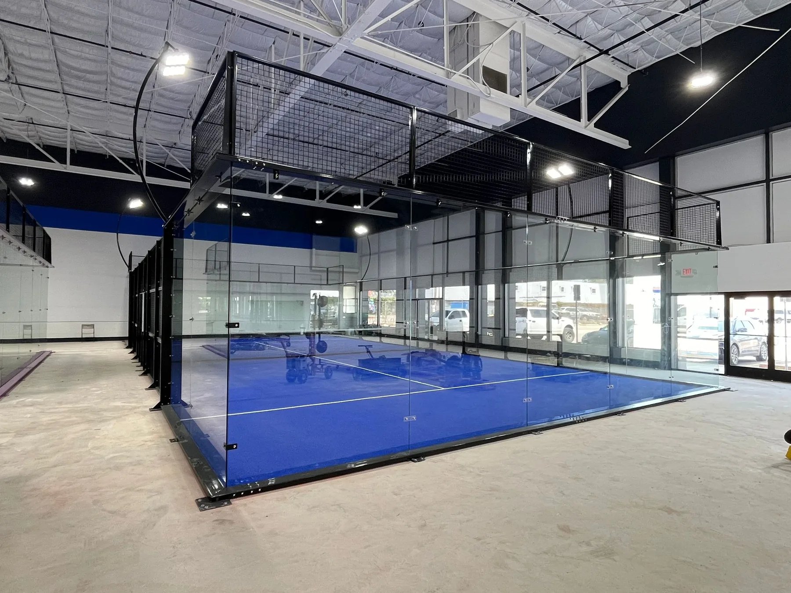

“Paddle”, “paddle tennis” and “padel” are used loosely, especially in the United States, where “paddle” can mean platform tennis on the East Coast or POP tennis on the West Coast. This guide uses the governing bodies’ names: padel, POP tennis and platform tennis.
Padel vs Paddle Tennis vs Platform Tennis at a Glance
| Factor | Padel | Paddle tennis (POP tennis) | Platform tennis |
|---|---|---|---|
| Court | 20 × 10 m (65.6 × 32.8 ft) | 50 × 20 ft (15.2 × 6.1 m) | 44 × 20 ft court on a 60 × 30 ft deck |
| Walls | Glass and mesh walls in play | None; open court | 12 ft wire screens in play |
| Surface | Sand-filled artificial turf | Hard court, like tennis | Raised aluminium deck, usually heated |
| Serve | Underhand, after a bounce, at or below the waist | Underhand | Overhand allowed; one serve only |
| Ball | Pressurised ball similar to a tennis ball | Reduced-pressure tennis ball | Rubber ball |
| Scoring | Tennis scoring | Tennis scoring | Tennis scoring |
| Format | Almost always doubles | Singles and doubles | Almost always doubles |
| Season | All year, indoor or outdoor | All year, mostly outdoor | Mainly autumn and winter |
What Is Padel?
Padel was created in Mexico in 1969 and is now governed internationally by the International Padel Federation (FIP). It is played in doubles inside a fully enclosed 20 × 10 m court. After the ball bounces, players can play it off the glass and mesh walls, and they may even use their own walls to send it back over the net. The serve is underhand, and scoring follows tennis. Read more in Padel Court Dimensions.
What Is Paddle Tennis (POP Tennis)?
Paddle tennis was introduced on New York playgrounds in the early 1920s and was rebranded as POP tennis in 2015 to distinguish it from padel and platform tennis. It is played on an open 50 × 20 ft court with a 31 in net, a solid paddle and a reduced-pressure tennis ball, with an underhand serve. Because there are no walls, it plays like a compact, fast version of tennis.
What Is Platform Tennis?
Platform tennis was invented in Scarsdale, New York, in 1928 and is governed by the American Platform Tennis Association. It is played mainly in winter, outdoors, on a raised aluminium deck that is usually heated to clear snow and ice. The 44 × 20 ft court sits on a 60 × 30 ft deck surrounded by taut 12 ft wire screens; balls can be played off the screens after the bounce, and each player gets only one serve.
Padel vs Paddle Tennis: Key Differences
- Walls: padel is enclosed and the walls are in play; POP tennis has no walls.
- Court: a padel court is larger (20 × 10 m against 50 × 20 ft).
- Construction: padel needs a steel structure, tempered glass and turf; POP tennis can often be lined onto an existing hard court.
Padel vs Platform Tennis: Key Differences
- Season: platform tennis is built for winter play; padel is played all year.
- Enclosure: both are enclosed, but padel uses glass and mesh, while platform tennis uses wire screens on a raised deck.
- Serve: padel serves are underhand with a second serve; platform tennis allows an overhand serve but only one attempt.
What This Means for Facility Owners
For a new club or venue, the three sports need very different infrastructure. Padel requires an enclosed court system of steel, 12 mm tempered glass, mesh, turf and lighting on a level, drained base; platform tennis requires a specialist raised and heated deck; POP tennis needs little more than lines and a net on a suitable hard court. Padel has by far the largest international player base, which is why most new commercial projects choose it. See Padel Court Construction for the build process, Padel vs Pickleball for an investment comparison and padel courts for sale for court systems.
Padel vs Paddle Tennis FAQ
Is padel the same as paddle tennis?
No. Padel is played on an enclosed 20 × 10 m court where the glass and mesh walls are in play. Paddle tennis, now usually called POP tennis, is played on an open 50 × 20 ft court with no walls.
Is platform tennis the same as padel?
No. Platform tennis is a North American winter sport played on a raised, heated aluminium deck surrounded by 12 ft wire screens. Padel uses a larger glass-walled court, an underhand serve and is played all year round.
Why do people call padel “paddle”?
The names sound alike, and in parts of the United States “paddle” also refers to platform tennis or POP tennis. Padel is the name used by the International Padel Federation.
Which sport is easiest for beginners?
Padel is often the easiest to start: the underhand serve and the walls keep the ball in play for longer, so beginners get rallies quickly.
Which sport is best for a new commercial facility?
Padel has the largest global player base of the three and an international federation, which is why most new clubs build padel courts. Platform tennis is concentrated in the US Northeast and Midwest, and POP tennis courts can often be lined onto existing hard courts.
Sources
- Encyclopaedia Britannica: paddle tennis
- Wikipedia: paddle tennis (POP tennis)
- Oakland County Parks: platform tennis courts and rules
Rules summarised here follow each sport’s standard format. Local leagues and federations may use variations, so check the current official rules before competition play.